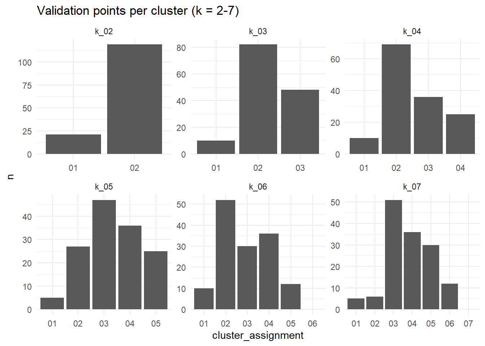
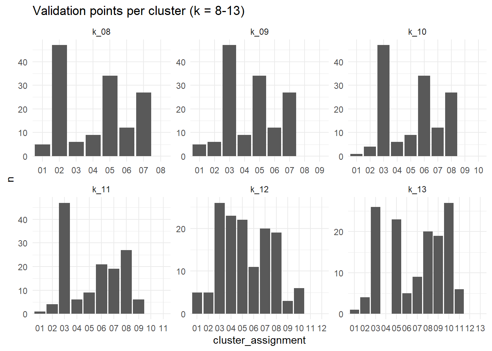
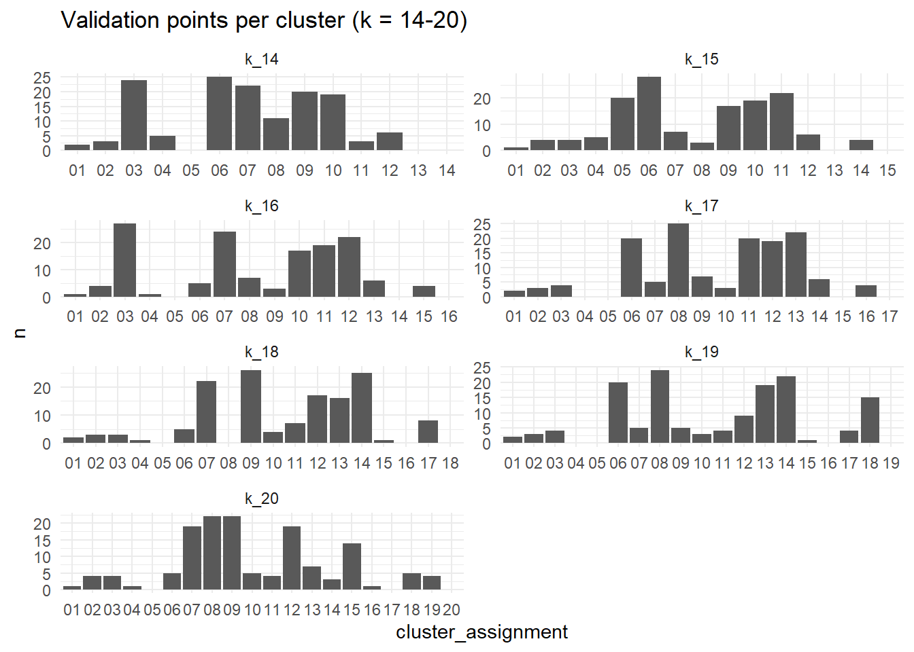
Now that I have the validation data extracted and combined with the soil property data, I can run pairwise comparisons between clusters for each value of k (different # of clusters). This may help us make an argument for why we chose one specific clustering (k=6 or k=8 for example) over others.
After processing all the validation data, we ended up with ~140 points to include (from CIG, NRCS-SHI, and NCSS-KSSL combined). Devine et al. had 396 points. The first thing I want to do is see how the points are distributed across the clusters (and perhaps also on a map of MN) to assess if this is sufficient.
I did identify a few sources for additional validation data, perhaps 20 additional points. Nothing huge, but could add if we want to strengthen the case. Notes in 2022-12-30 log entry about this.
Here I am illustrating how many independent validation points we have for each cluster assignment, for the different model options from k = 2 - 20.
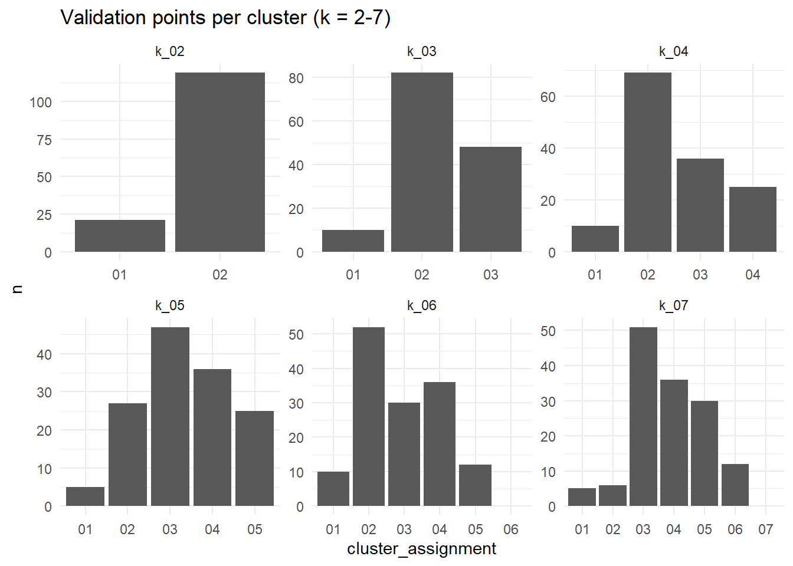
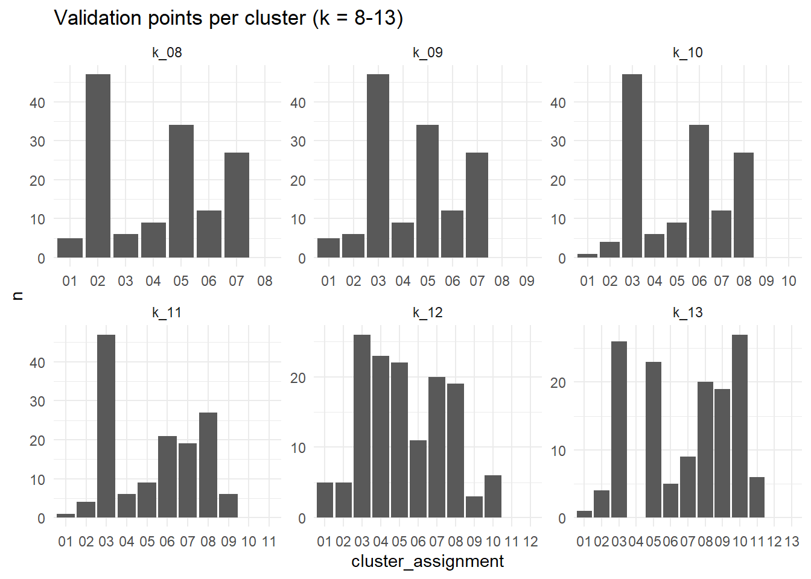
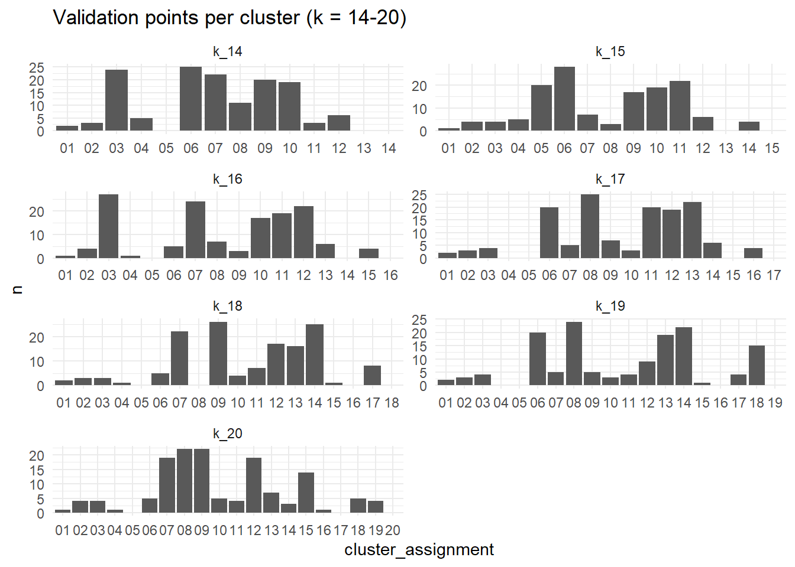
Because our validation data points are coming from different projects / datasets, we don’t have exactly the same variables from each one. This is a reminder of which variables exist in the three sources we used for validation points:
In summary: all three datasets include bulk density, pH, organic matter, and clay, and KSSL and CIG include carbonates. So I think it makes sense to focus on plotting and doing pairwise comparisons with these variables specifically
Working out the steps I need to include in a function to do the pairwise comparisons. This first chunk shows how I would do it if using one-way ANOVA followed by
# test case k=6 version and organic matter
test_dat <- val_dat %>%
select(val_unit_id, k_6, om_loi, claytotal, source) %>%
drop_na(om_loi)
# plot to see distributions
test_dat %>%
ggplot(aes(x = k_6, y = om_loi)) +
geom_boxplot() +
geom_point() +
theme_bw()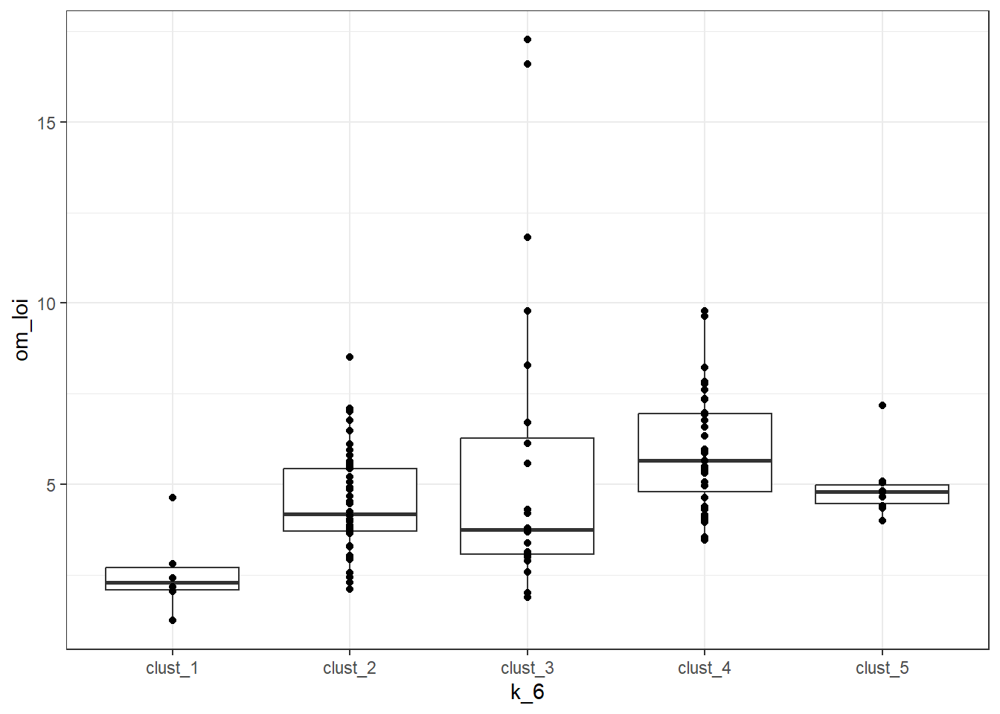
test_lm <- lm(formula = om_loi ~ k_6,
data = test_dat)
# look at some diagnostic plots for our model
# note homogeneity of variance looks sketchy
performance::check_model(test_lm, check = c("normality", "homogeneity", "linearity"))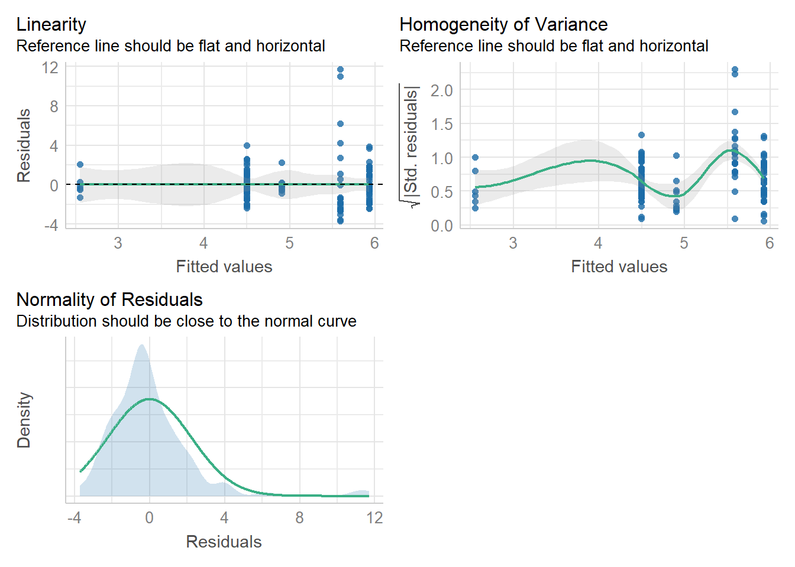
This shows how I would do pairwise t-tests with unpooled variance. This might be more appropriate than the ANOVA approach I originally tried, because the diagnostic plots above suggest that we don’t have homogeneity of variance for our validation dataset.
“For some examples, one can use both the pooled t-procedure and the separate variances (non-pooled) t-procedure and obtain results that are close to each other. However, when the sample standard deviations are very different from each other, and the sample sizes are different, the separate variances 2-sample t-procedure is more reliable.” Penn State STAT 800 “Applied Research Methods” 5.6.1.2
Note that the p-value adjustment method here is “holm”.
# view the standard (console) output
with(test_dat, pairwise.t.test(om_loi, k_6, pool.sd = FALSE))
Pairwise comparisons using t tests with non-pooled SD
data: om_loi and k_6
clust_1 clust_2 clust_3 clust_4
clust_2 0.03925 - - -
clust_3 0.03313 0.93472 - -
clust_4 0.00150 0.00062 0.93472 -
clust_5 0.01717 0.93472 0.93472 0.06359
P value adjustment method: holm # tidy output, filter to significant comparisons only
with(test_dat, pairwise.t.test(om_loi, k_6, pool.sd = FALSE)) %>% broom::tidy() %>%
filter(p.value < 0.05)Arguments: soil property and k option (model version / number of clusters) and validation dataframe.
Returns: all pairwise comparisons in a dataframe
compare_clust_pairwise <- function(soil_var, k_opt, df) {
dat_no_na <- df %>%
select(val_unit_id,
all_of(k_opt),
all_of(soil_var)) %>%
drop_na(all_of(soil_var))
# can't do pairwise t-tests with only 1 obs in a
# group, so need to filter those out
n_obs_per_cluster <- dat_no_na %>%
count(.data[[k_opt]])
single_obs_clusters <- n_obs_per_cluster %>%
filter(n == 1) %>%
pull(.data[[k_opt]])
if(length(single_obs_clusters) == 0){
dat_subset <- dat_no_na
}else{
dat_subset <- dat_no_na %>%
filter(!(.data[[k_opt]] %in% single_obs_clusters))
}
soil_var_vec <- dat_subset %>% pull(soil_var)
clust_vec <- dat_subset %>% pull(k_opt)
pairs_df <- pairwise.t.test(soil_var_vec,
clust_vec,
pool.sd = FALSE) %>%
broom::tidy()
return(pairs_df)
}
quiet_compare_clust_pairwise <- purrr::quietly(.f = compare_clust_pairwise)This is what the pairwise function returns:
compare_clust_pairwise(soil_var = "ph1to1h2o",
k_opt = "k_10",
df = val_dat) Here I create a dataframe to hold the results of the pairwise comparisons, then use map2() to iterate over the variables and cluster sizes, running all the tests.
# vars to compare on
var_names <- c("claytotal", "ph1to1h2o", "om_loi", "caco3", "dbthirdbar")
# all possible values of k (number of clusters)
cluster_opts <- glue("k_{2:20}")
# create df with all combinations of var_names x clusters
comp_template <- tidyr::crossing(var_names, cluster_opts)
# run the pairwise comparisons for each var and cluster size
diffs_df <- comp_template %>%
mutate(comps_all = map2(.x = var_names,
.y = cluster_opts,
.f = compare_clust_pairwise,
df = val_dat))Now need to count how many of the tests have an adjusted p-value < 0.05. All of the p-values are adjusted with the Tukey method.
count_sig_comps <- function(df){
df %>%
filter(p.value<0.05) %>%
nrow()
}
sig_diffs_df <- diffs_df %>%
mutate(n_sig_pair_diffs = map_int(comps_all, count_sig_comps)) %>% select(-comps_all) %>%
mutate(num_regions = as.numeric(str_extract(cluster_opts, "[:digit:]+")),
possible_comps = (num_regions * (num_regions - 1)) / 2)
write_csv(sig_diffs_df, file = "data/original_pairwise_comparisons.csv")First we can look at a plot of all the cluster sizes, from 2-20. For carbonates, bulk density, and organic matter, this plot seems to level off around k=11. For clay and pH, we continue to see an increase in the number of significant contrasts beyond k=11. This pattern is more apparent when looking at the smoothed trends in the second plot here.
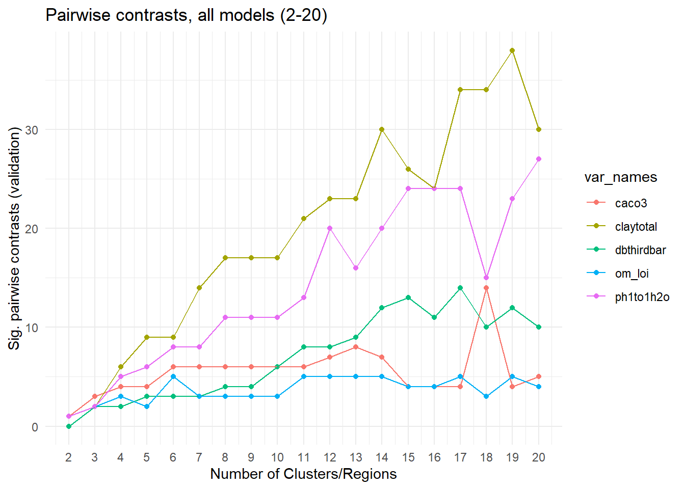
`geom_smooth()` using method = 'loess' and formula = 'y ~ x'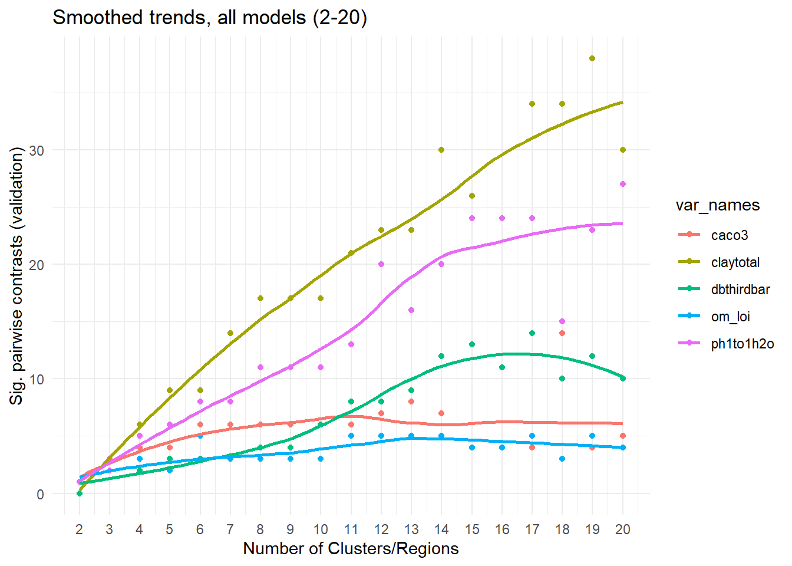
For context, this plot shows a black line for the total number of possible contrasts
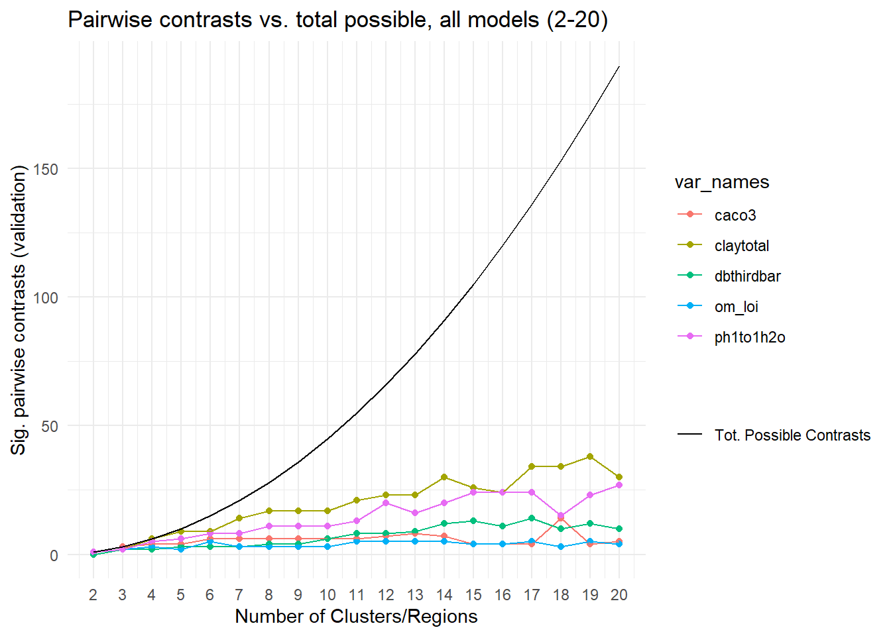
Two other ways to contextualize the number of significant contrasts: 1) with a table, and 2) with a plot showing how the % significant contrasts (as a function of total possible) changes as the number of clusters goes up.
For the % significant contrasts, we see local maxima at k = 8 and k = 11, although the one at k = 11 is slightly smaller.
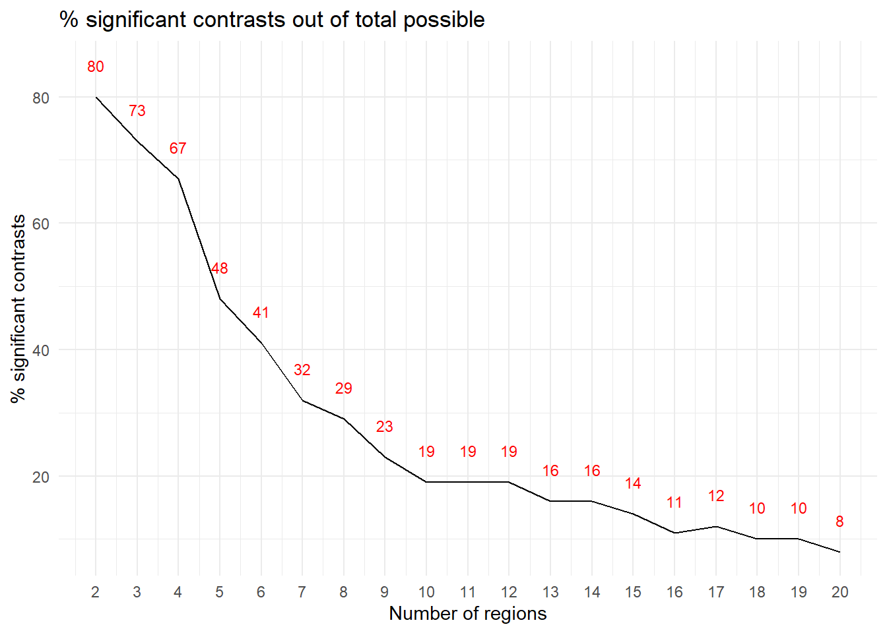
Let’s look more closely at our model options in the middle range, from 5-15.
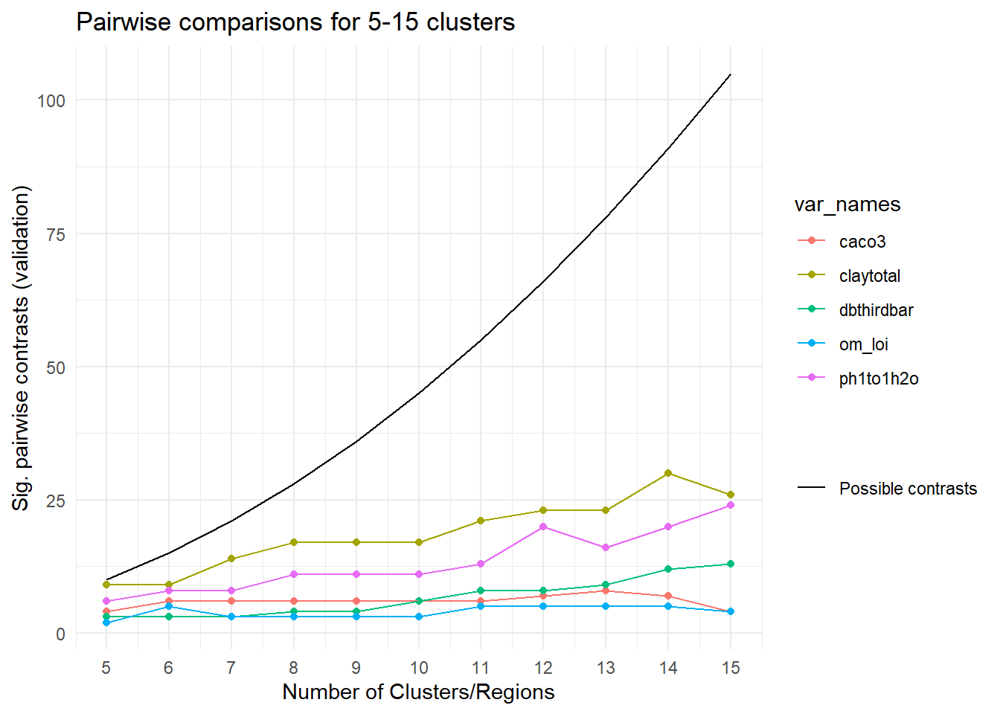
Dropping the “total possible” line makes marginal changes from one model to another easier to see (below). What I notice about the graph below:
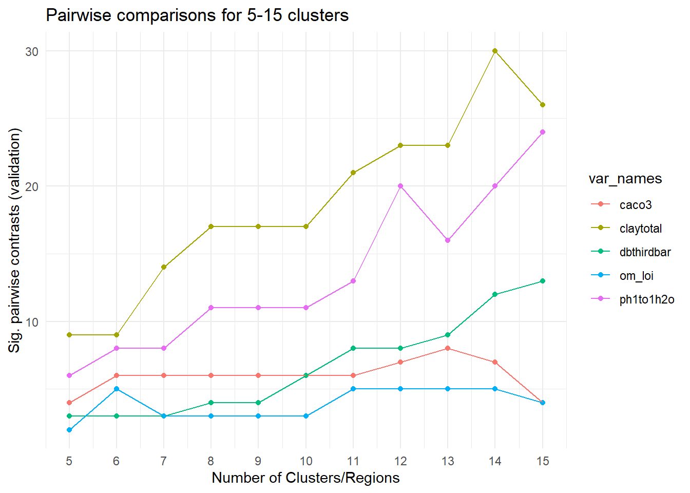
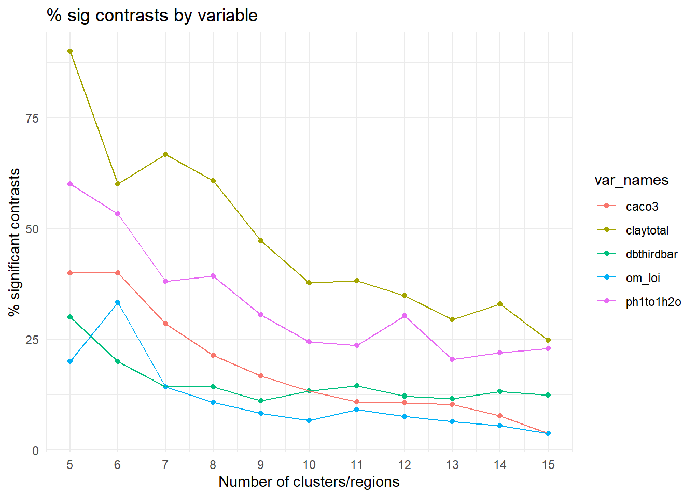
From the plots above, we’ve learned that differences in clay and organic matter are primarily responsible for the significant contrasts we see being added from the k=7 model up to the k=12 model. In particular, we know that the move from the k=10 model to k=11 model results in an increased % of significant contrasts in these two variables (see immediately preceding plot)
The table below illustrates the number of significant contrasts for each model version in the k=7-12 range, for clay and organic matter. Note that there are 10 significant contrasts added for clay when going from k=10 to k=11.
I was curious to know why this was, so I looked at some of the alluvial plots in _refs. The dimensions of these make it hard to display them legibly in HTML format, but looking at alluvial_k8-11.pdf , I can see that the new cluster added in k_11 is a relatively small (n=200 mapunits) group of the highest clay soils which also have EC ~1 and 3% carbonates. This is also illustrated in the k=11 map grids in the folllowing chapter.